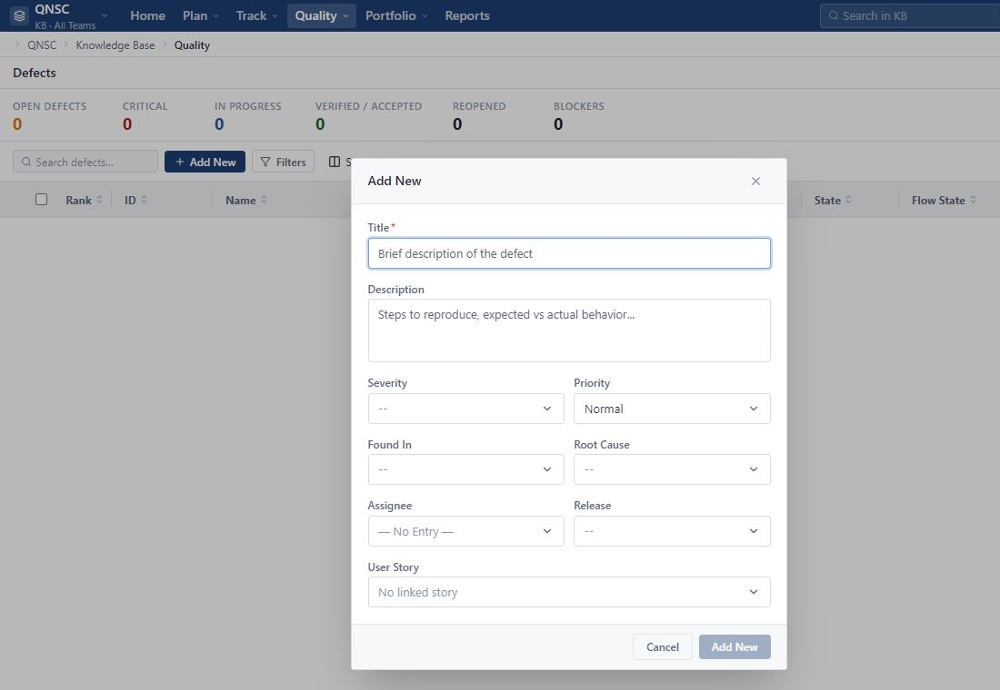

Quality has no Defect
Check Project, Team, Search and Filters. If the screen says No defects logged yet after removing the filter, the current scope does not have a Defect.
Quality > Defects focuses all Defects of the currently selected scope. Track > Team Status group Tasks according to the person in charge so that the manager can see the volume and progress of the Team in an Iteration.
Use this screen when you need to view errors separately instead of filtering Defects in the Backlog.
Defect displays according to the currently selected scope on the top bar. Select the correct Project and Team before reading data or creating new ones.
The screen has an overview area and a Defect list. When the scope has no defects, the system displays No defects logged yet; This is not a data loading error.
The list includes Rank, ID, Name, User Story, Severity, Priority, State, Flow State, Fixed In Build, Iteration, Submitted By and Owner.
Use Search defects, Filters and Show Fields. Pagination at the bottom of the table only changes the number of lines in view.
Defect in Quality and Defect in Backlog are same Work Item. Changes in one screen must be reflected in the other screen; Don't create copies just for monitoring in Quality.
Use Add New when you detect an error and want to record it directly in the specialized screen.

The quick creation form opens directly above the Quality list. Double-check the scope in the top bar before entering.
Title briefly states the error symptom. Description should include conditions, reproduction steps, expected results and actual results.
Select Severity, Priority, Assignee and related information if known. The undefined field can be left blank and added later.
User Story is optional. Only active Story links within the same Project; Don't choose a Story just because the name is similar.
After creating, open Defect Detail to check State, Flow State, Team, Iteration and other fields that need to be added.
Expected result: New Defect appears in Quality and Backlog with the same ID. If you need to create more details from the beginning, you can also create a Defect from the Backlog following the instructions in Part 03.
Each field answers a different question. Do not use Priority instead of Severity.
Severity describes the level of impact of the error on the product: None, Critical, Major Problem, Minor Problem or Trivial. Choose according to the practical consequences, for example data loss or main thread blocking is more serious than a small display error.
Priority describes the order to be processed: None, Urgent, High, Normal or Low. A high Severity error may not be the first priority if it does not affect the assigned scope; Priority decisions need to be based on current plans and risks.
User Story indicates which need the error is directly related to. This link is not required and only accepts Stories within the same Project. Fixed In Build is hand-entered information about the build or version with the fix; Only fill in when you have identified that build.
Defect has its own State to track the error handling process, while still having the Work Item's Flow State.
Error has just been reported and is awaiting review.
The error has been accepted for analysis or processing.
The fix is available and awaiting confirmation.
The fix has been confirmed and the bug is closed.
Used when deciding not to handle the error and need to keep the record and reason.
Flow State uses the values Idea, Defined, In-Progress, Completed, Accepted and Release. Flow State serves the workflow; Defect State serves the defect lifecycle. The two independent fields should change the Flow State but not the Defect State themselves.
Closed and Closed Declined are used when you need to keep Defect as history. Deleting Defect is another operation, requiring correct permissions and confirmation steps. This guide does not require reopening a Closed or Closed Declined Defect because the reopen rule is not within the confirmed scope.
Use Track > Team Status to view Tasks assigned to each member and the total number of hours in an Iteration.
Team Status takes members from the currently selected Team. All Teams is a general view, not a Team to assign a Task.
The screen is only available to Workspace Admin and Project Admin according to current permissions. Editor manages Tasks from the Tasks tab of the Work Item and does not go to Team Status.
Use the previous button, the Iteration list and the following button at the top of the page. Changing Iteration will change the entire group member, Task and total number.
Totals adds Capacity, Estimate, To Do and Actuals of the entire Iteration scope, not just the lines on the current paging page.
Each group displays name, Task number, progress percentage and hours. Open the group to see Task ID, Task Name, Work Product, Release, State and Owner.
Team Status has Filters and paging; There is no separate Search Tasks or Show Fields box. Tasks without an Owner are grouped below Unassigned with Capacity equal to 0 hours.
Team Status displays the Task, while the overall progress is reflected in the parent User Story or Defect.
Each Task in Team Status belongs to exactly one User Story or Defect recorded in the column Work Product. Task inherits Iteration from parent Work Item and is calculated exactly once within the selected scope.
When a Task moves to Completed, the system updates the progress of the parent Work Item. If there is still a Task that has not been completed, the parent item has not completed itself. When all child Tasks are Completed, the parent item automatically switches to Completed.
If you reopen a Task to Defined or In-Progress, the parent item automatically switches back to In-Progress and recalculates the progress. Estimate, To Do and Actual of the Task remain the same; Changing State does not automatically edit the time fields.
Check the scope and data source before recreating a Defect or Task.
Check Project, Team, Search and Filters. If the screen says No defects logged yet after removing the filter, the current scope does not have a Defect.
Compare with Project/Team and remove filter. The two screens use the same Defect data so no replacement items are created.
Story must be active, in the same Project and within the scope of your access. The link can be left blank if the error does not belong to a specific Story.
Editor does not have permission to access this screen. Use the Tasks tab of Work Item or contact Project Admin when you need to view Team summary.
The list only takes active members of the currently selected Team. People outside the Team cannot create a new member group.
This is correct behavior. Update Estimate, To Do and Actual directly on Task; State only reflects the execution phase.